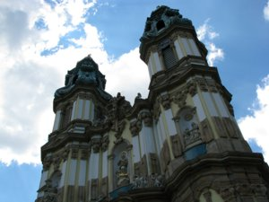
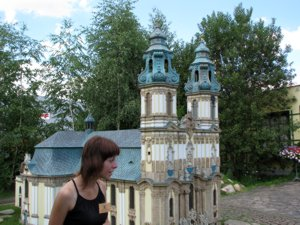
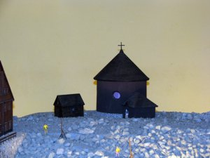
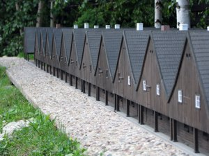

{kind=link}
{kind=link}
{kind=link}
{kind=link}

Kowary - park miniatur
28 lipca 2008 roku wybrałem się na wycieczkę do Kowar - chciałem zobaczyć tamtejszy park miniatur. Oczywiście eksponatem który najbardziej chciałem zobaczyć to miniatura krzeszowskiej bazyliki (która występuje tu jako "Opactwo Cysterskie w Krzeszowie" - choć raczej jest to tylko jeden z obiektów opactwa).
|  | I trzeba przyznać, że miniatura naprawdę przypomina oryginał ... |
|  | Oczywiście nie jest to wierna kopia krzeszowskiego kościoła - gdzieniegdzie czegoś brakuje (np. rzeźby Duch Święty (gołębica) ponad sceną Zwiastowania) a gdzieniegdzie czegoś zbywa (np. Scena Nawiedzenia – spotkania Maryi z św. Elżbietą - w oryginale rzeźby Maryi i Elżbiety nie mają dłoni; czy też druga tarcza zegara na elewacji której też dziś już nie zobaczymy). |
|  | Z innych "krzeszowskich" akcentów możemy w parku zobaczyć miniaturę kaplicy św. Wawrzyńca (i to w dwóch egzemplarzach - na zewnątrz na "współczesnym" szczycie Śnieżki i wewnątrz hali na jego "starym" wyglądzie). Budowę tego obiektu w roku 1665 zlecili hrabia K. L. Schaffgotsch z Cieplic wraz z opatem Bernardem Rosą budowniczemu z Kowar a poświęcenia ukończonej kaplicy opat krzeszowskich cystersów dokonał po 16 latach, 10 sierpnia 1681 roku. |
|  | ... czy też domki "Dwunastu Apostołów" z Chełmska Śląskiego (wybudowane w 1707 roku na zlecenie krzeszowskiego opata Dominika Geyera, w mieście będącym wówczas własnością klasztoru). |
|
Park miniatur moim zdaniem jest miejscem wartym odwiedzenia. Przystępne ceny biletów, bezpłatny parking, kilku przewodników równocześnie oprowadzających po parku i ciekawie opowiadane historie obiektów, wiernie wykonane miniatury - nie dziwi więc widok naprawdę wielu zwiedzających. |